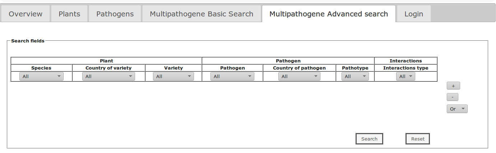

Examples
Based on this template database, 2 databases are already running :
MENERGEPdbCassavaHub
For the querying, there is 2 search tabs allowing the display of results with more or less informations
Basic search : give informations only about which varieties are resistance/sensitive to a given pathogen
Advanced search : give more informations about pathogens and their pathotypes 